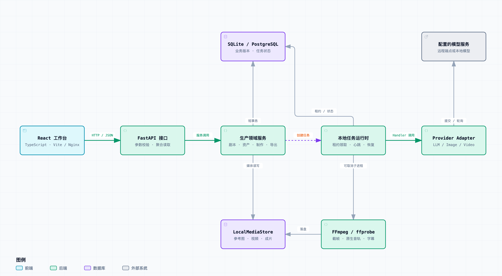
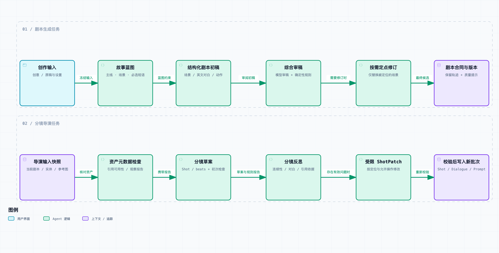
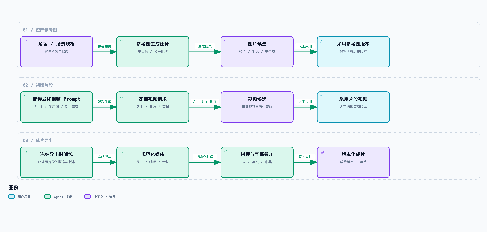
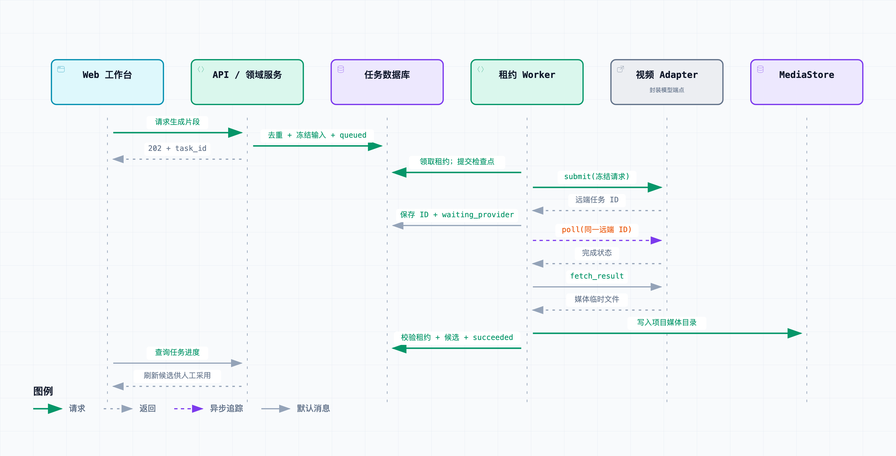
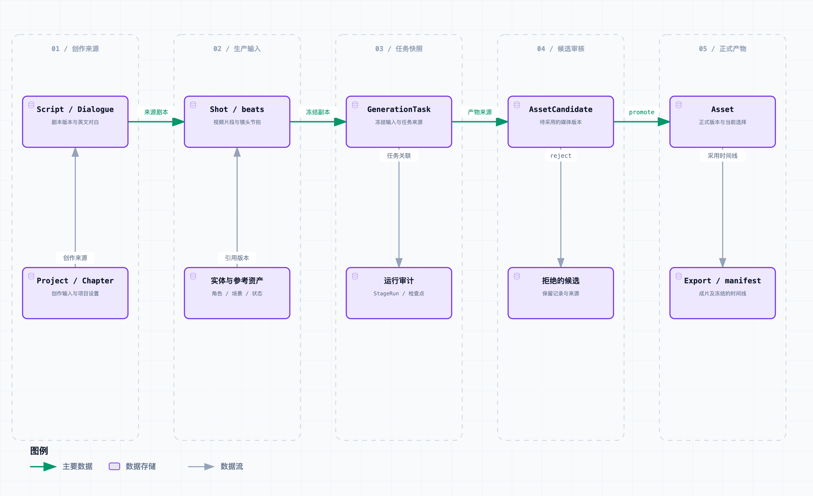
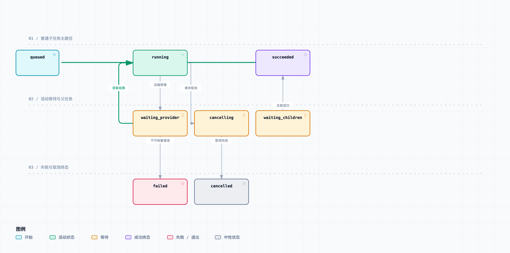

01 / ARCHITECTURE
系统运行架构
从工作台到领域服务、租约 Worker、模型与持久化，理解当前运行边界。
六张图，从创作输入到可追溯的动画成片。选择一张图，查看组件、流程与任务的细节；交互图支持搜索节点、追踪关系、缩放和深浅主题。

从工作台到领域服务、租约 Worker、模型与持久化，理解当前运行边界。

对照剧本与分镜两条创作链路，查看审稿、受限修订和合同校验。

参考图、视频候选与成片导出，串起采用版本和局部重生成。

沿数据库检查点追踪一次异步视频请求，了解提交、轮询与结果写入。

查看输入快照、来源任务、候选、正式资产与导出的版本关系。

理解普通任务、远端等待、父任务、取消、失败和重试的边界。